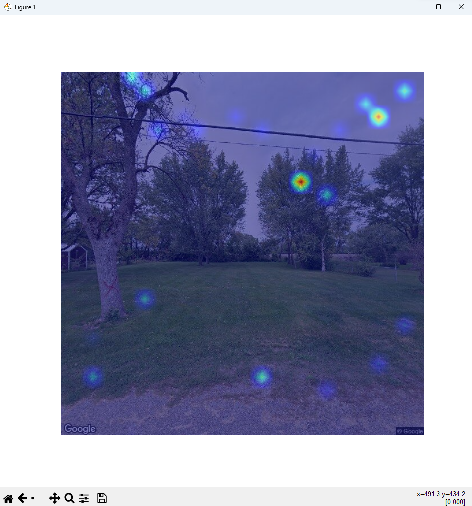
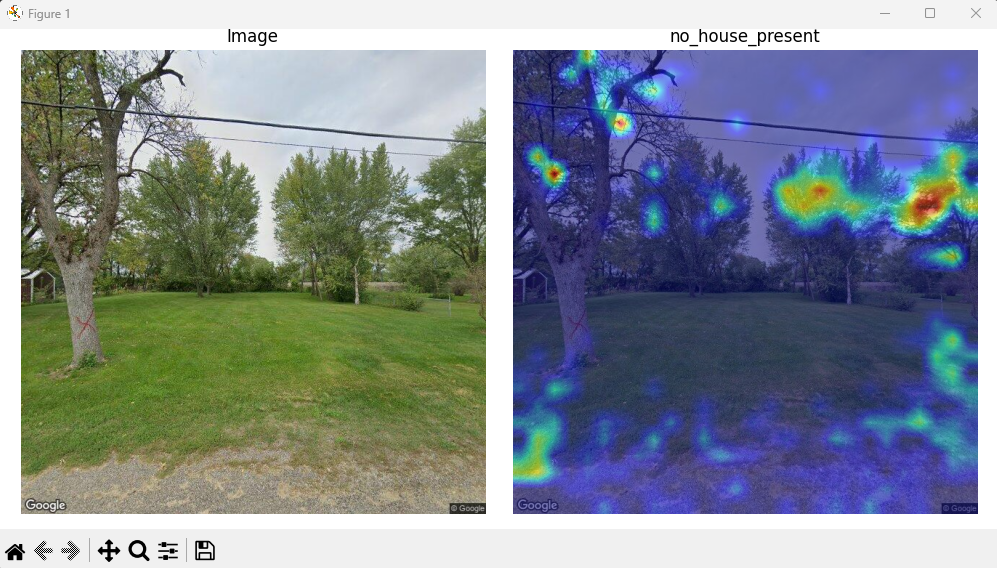

Guide, CAM, BOX, Presentation
This is our final week with our final presentation on Friday.
First I made a guide on AI used during this project here. This guide is for the Friday presentation but also future DSPG students.
CAM
I am so glad to announce that I got the CAM model working as of Monday morning. It turns out that in the weekend Seven blog I almost had the entire model running properly. What I found during this eighth weekend is that instead of tracking the weights as the model predicted I was rewriting the value. So it was a simple fix of adding .clone() to make clones of the x variable. Last week it seemed that the heat map marks were showing up randomly and was the same in every test image but after my tweak they seemed random still but now different.





The difference between the second and third row of images is the amount of data. As I increased the amount of data the accuracy of the model increased with it so the red spots increased in size. I realized that the model may preform better if I used it on different data that was more simple such as cats and dogs. I think the reason the house present model is struggling in prediction is due to the trees in the background but as data increases accuracy should too.
I duplicated the model to train on cats and dogs instead to see how well it worked when more simple data was available. The house present model had a ratio of about 400 images of houses present and 40 images of no house present which is a bad ratio while dog and cat images from Google I started with 100 of each category then increased to 200 in each category.
I was very excited to see these images because it showed that the CAM model was working properly. The house present category is difficult to determine due to trees and we allow houses to be in the background if it is a picture of an empty lot but it preforms much better on images of cats and dogs. With just 200 images of cats the model was able to look at the eyes and nose to determine that it was a cat. The second image has more coloring because it had more training data. An image that would show very high accuracy and confidence can be shown with the model I used to evaluate pandas during the 6th weekend here.
Next I downloaded all of the images we have so far into box to replace the messy images that were there. I have made programs to download new Google Images and sort them so if I deleted extra images next year can download new ones. I will delete old Google images and upload our training sorted images by the end of the week.
Some time was spent writing recommendations for next year. I wrote most of the code and model recommendations, I hope these blogs will be helpful to get the next team started on the project.
Huge issue I just found, the h5 file produced for the SHAP model is too big to upload to GitHub. The maximum is 100 MB and the h5 file is 197 MB. I decided that this is not my problem (sorry next year) but I uploaded the code to construct new models. There is a process to upload large files through git here but I am not sure if other people in the project also need to do this so I just left the model out.